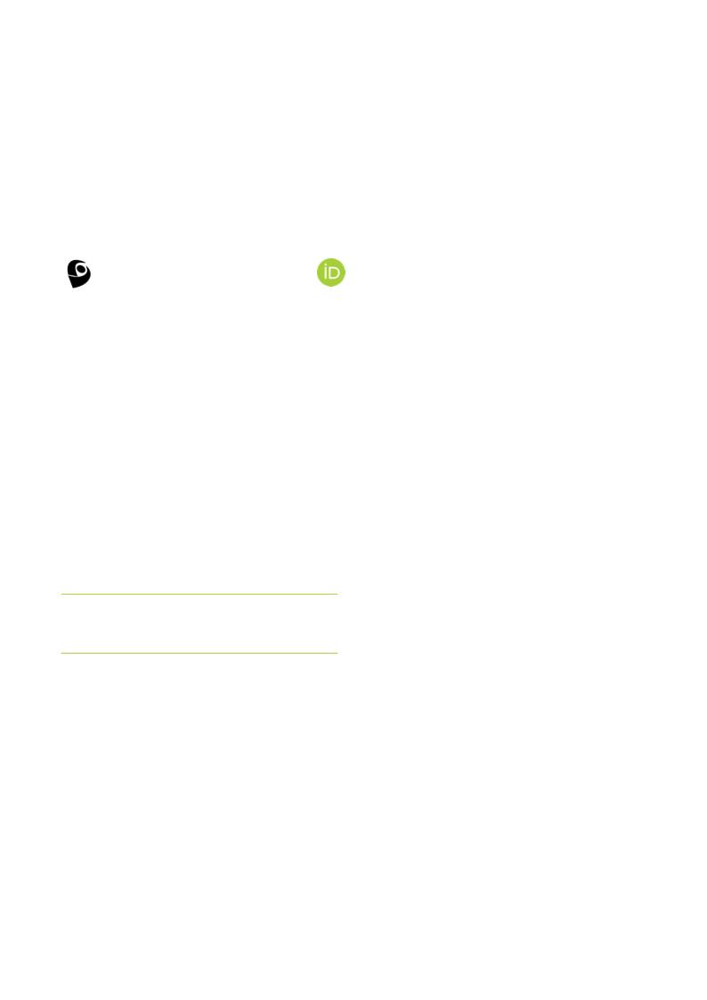

A R T I G O D E O P I N I Ã O
F O R M A Ç Ã O E M R A D I O L O G I A
ENTRE O CURRÍCULO E A PRÁTICA
Marcelo Salvador Celestino - Doutor e Mestre em Mídia e Tecnologia (UNESP), Técnico e Tecnólogo em
Radiologia e Bacharel em Administração | e-mail: mcelestino@proton.me
Há uma discrepância entre o que as instituições de educação profissional e tecnológica documentam e aquilo que a
formação em Radiologia efetivamente produz. Cargas horárias são cumpridas, projetos pedagógicos contemplam
ética profissional e o estágio supervisionado é realizado. Ainda assim, o egresso pode reproduzir uma atuação
tecnicista, centrada no equipamento e no protocolo de exame, reduzindo a sua interação no processo do cuidado e
da ética em saúde à aplicação de regras técnicas. A tese é simples: a grade curricular, embora necessária, não é
suficiente, de maneira isolada, para formar profissionais. O cumprimento documental precisa ser acompanhado de
uma formação integral, cuja efetividade encontra, entre outros fatores, dois gargalos estruturais: um docente e
outro no mundo do trabalho.
O ponto de partida conceitual fundamenta-se em Busby e Coeckelbergh [1], para quem as responsabilidades
profissionais (no contexto da Engenharia) não se esgotam nos códigos, sendo também socialmente atribuídas por
aqueles potencialmente expostos aos riscos. No caso das Técnicas Radiológicas, essa perspectiva coloca o paciente
no centro da responsabilidade profissional, especialmente diante de situações que envolvem crianças, gestantes,
idosos, pacientes oncológicos ou pessoas com baixa literacia em saúde. O Código de Ética dos Profissionais das
Técnicas Radiológicas [2] estabelece princípios e deveres para essa atuação, mas sua efetivação depende de
processos formativos capazes de transformar princípios normativos em práticas concretas.
Gargalos na educação técnica e tecnológica em Radiologia
Tardif [3] demonstra que os saberes experienciais,
embora
fundamentais,
não
se
convertem
automaticamente em saberes pedagógicos. Sem essa
mediação, há o risco de reproduzir modelos baseados
na demonstração, repetição técnica e transmissão de
regras, fazendo da deontologia um conteúdo avaliativo
e da técnica uma prática a ser simplesmente imitada.
A formação contemporânea em saúde, entretanto,
exige
uma
perspectiva
integral,
que
articule
conhecimentos, práticas, atitudes e valores. Nesse
sentido, Delors [4] propõem uma educação orientada
pelos pilares de aprender a conhecer, aprender a
fazer, aprender a viver juntos e aprender a ser, em
uma perspectiva de educação ao longo da vida. Para a
formação em Radiologia, essa concepção desloca o
foco
da
mera
execução
técnica
para
o
desenvolvimento, ou seja, a capacidade de mobilizar
ALÉM DA IMAGEM · CORED-SP · CRTR-SP
08
conhecimentos
e
atitudes
diante
de
situações
concretas, considerando as dimensões técnica, ética,
relacional e social do trabalho em saúde.
O primeiro gargalo é docente. Professores dos
cursos técnicos e superiores de Radiologia podem
chegar à docência principalmente pela experiência
profissional, sem, necessariamente, possuir formação
pedagógica
específica.
Sem
conhecimentos
pedagógicos básicos a respeito de teorias ou estilos de
aprendizagem,
por
exemplo,
o
professor
pode
reproduzir com seus alunos práticas e experiências
negativas de sua própria formação, mantendo uma
prática pautada na repetição e contribuindo para a
perpetuação do tecnicismo na Radiologia.
Soma-se a isso a necessidade de maior autonomia
das instituições e dos docentes para responder às
especificidades regionais e às transformações do
mercado, sem que o cumprimento das cargas horárias
regulatórias se sobreponha às necessidades efetivas da
formação.
Muitas
vezes,
estes
esbarram
em
burocracias e modelos truncados e genéricos de
ensino, que acabam por limitar, ainda mais, os
processos educativos.
http://orcid.org/0000-0003-4297-3209
http://lattes.cnpq.br/8022166893732690
A tese é simples: a grade curricular,
isoladamente, não forma
profissionais.